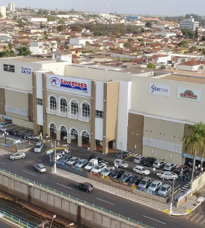

Quem somos
A rede Savegnago Supermercados é consolidada como a rede forte do interior. A empresa supermercadista nasceu em agosto de 1976, na ciddade de Sertãozinho, interior de São Paulo, e em 2019 completou 43 anos. Está presente em 16 cidades do estado, impactando cerca de três milhões de habitantes e gerando aproximadamente 8.500 postos de trabalho diretos em suas 44 lojas - já em atividades - quatro postos de combustíveis, dois Centros de Distribuição e um Centro Administrativo.
As constantes expansões e investimentos da rede a colocam, no quesito faturamento, em primeiro lugar no interior paulista, segundo a Associação Brasileira de Supermercados (ABRAS). E a rede confirma investimento de R$ 300 milhões, entre 2019 e 2020, para a abertura de novas lojas. Sempre inovando, o Savegnago Supermercados permite aos seus clientes experiências como o sistema Self Check-Out, em que o consumidor tem a oportunidade de passar e pagar suas compras, administrando o seu tempo de acordo com suas necessidades. Outra possibilidade é o E-Commerce, ferramenta implementada pela rede para que os clientes façam suas compras por meio da internet, sendo beneficiado pela comodidade e a segurança de receber os produtos em suas casas. Além do potencial varejista, a rede Savegnago tem a sua consciência e atuação na responsabilidade social. Está em atividade, em Sertãozinho, a Instituição Aparecidoo Savegnago. Trata-se de uma entidade sem fins lucrativos, criada em 2008, com o objetivo de oferecer cursos para promover a inclusão cultural de crianças e adolescentes sertanezinos, em condições de vulnerabilidade social, para o desenvolvimento de sua formação artística. Atualmente, são atendidas cerca de 300 crianças e adolescentes, com idade entre 7 e 18 anos. Em 2018, a rede inaugurou o projeto “Escola Savegnago”, também em Sertãozinho. O objetivo, em parceria com o SENAC, é oferecer cursos técnicos em vá,rias áreas como operador de caixa, açougue, rotisseria, padaria, entre outros. A rede acredita que somente a educação tem o poder de transformar vidas, abrindo portas para um mundo cheio de novas possibilidades.
A rede Savegnago Supermercados é consolidada como a rede forte do interior. A empresa supermercadista nasceu em agosto de 1976, na cidade de Sertãozinho, interior de São Paulo, e em 2019 completou 43 anos. Está presente em 16 cidades do estado, impactando cerca de três milhões de habitantes e gerando aproximadamente 8.500 postos de trabalho diretos em suas 44 lojas - já em atividade - quatro postos de combustíveis, dois Centros de Distribuição e um Centro Administrativo. As constantes expansões e investimentos da rede a colocam, no quesito faturamento, em primeiro lugar no interior paulista, segundo a Associação Brasileira de Supermercados (ABRAS). E a rede confirma investimento de R$ 300 milhões, entre 2019 e 2020, para a abertura de novas lojas. Sempre inovando, o Savegnago Supermercados permite aos seus clientes experiências como o sistema Self Check-Out, em que o consumidor tem a oportunidade de passar e pagar suas compras, administrando o seu tempo de acordo com suas necessidades. Outra possibilidade é o E-Commerce, ferramenta implementada pela rede para que os clientes façam suas compras por meio da internet, sendo beneficiado pela comodidade e a segurança de receber os produtos em suas casas. Além do potencial varejista, a rede Savegnago tem a sua consciência e atuação na responsabilidade social. Está em atividade, em Sertãozinho, a Instituição Aparecidoo Savegnago. Trata-se de uma entidade sem fins lucrativos, criada em 2008, com o objetivo de oferecer cursos para promover a inclusão cultural de crianças e adolescentes sertanezinos, em condições de vulnerabilidade social, para o desenvolvimento de sua formação artística. Atualmente, são atendidas cerca de 300 crianças e adolescentes, com idade entre 7 e 18 anos. Em 2018, a rede inaugurou o projeto “Escola Savegnago”, também em Sertãozinho. O objetivo, em parceria com o SENAC, é oferecer cursos técnicos em várias áreas como operador de caixa, açougue, rotisseria, padaria, entre outros. A rede acredita que somente a educação tem o poder de transformar vidas, abrindo portas para um mundo cheio de novas possibilidades.
Missão, Visão e Valores

- Missão
- Visão
- Valores
Gerar valos às pessoas
Ser líder nos mercados de atuação como referência de marca, inovação e empresa para se trabalhar.
O Savegnago preza por valores e princípios claros em sua gestão, sendo eles:
- Ética e transparência no relacionamento com clientes, fornecedores, funcionários e acionistas; - Qualidade no atendimento, produtos e serviços oferecidos; - Responsabilidade e respeito com o meio ambiente e a sociedade; - Melhoria contínua e inovação nos processos e procedimentos; - Sustentabilidade e empreendedorismo como base da cultura e do crescimento da empres
Nossa História
Responsabilidade Social,
Ambiental e projetos
Instituição Aparecido Savegnago
A Instituição tem como missão atender e beneficiar crianças e adolescentes carentes através de cursos oferecidos gratuitamente. Dentre eles destacam-se: música, informática, inglês, artes e formação de coral destinado ao público infanto-juvenil e adulto. Anualmente a Instituição atende cerca de 230 crianças. As vagas são direcionadas para a população carente e os filhos dos funcionários da rede Savegnago. As crianças aprendem disciplina e dependem de boas notas e frequência nas aulas do ensino regular para continuarem participando das atividades oferecidas pela Instituição. Novos cursos estão sendo programados para serem adicionados à grade de atividades e a expectativa de ajudar um número cada vez maior de crianças faz parte dos planos da direção da Instituição.
Preocupada com o desenvolvimento das regiões e das comunidades onde está inserida, a rede Savegnago contribui com diversos programas sociais e ambientais. Confira abaixo alguns desses projetos:
Instituição Aparecido Savegnago
A Instituição tem como missão atender e beneficiar crianças e adolescentes carentes através de cursos oferecidos gratuitamente. Dentre eles destacam-se: música, informática, inglês, artes e formação de coral destinado ao público infanto-juvenil e adulto. Anualmente a Instituição atende cerca de 230 crianças. As vagas são direcionadas para a população carente e os filhos dos funcionários da rede Savegnago. As crianças aprendem disciplina e dependem de boas notas e frequência nas aulas do ensino regular para continuarem participando das atividades oferecidas pela Instituição. Novos cursos estão sendo programados para serem adicionados à grade de atividades e a expectativa de ajudar um número cada vez maior de crianças faz parte dos planos da direção da Instituição.
Escola de Supermercado Savegnago
Projeto em parceria com o SENAC Ribeirão Preto com o objetivo de profissionalizar e capacitar gratuitamente jovens e adultos – entre 16 e 24 anos - para o setor supermercadista. O projeto oferece vagas em cursos como operador de supermercado, panificação, confeitaria, operador de caixa, informática e inglês, entre outros. Os cursos contam com aulas teóricas e práticas e os alunos têm a oportunidade de vivenciá-las na loja 1 do Savegnago Supermercados - o primeiro Supermercado Escola da rede - em Sertãozinho.
Starcine
A rede também ajuda a difundir a arte em Sertãozinho, através do cinema Savegnago: o Starcine - o único do município. Esse empreendimento conta com duas salas de última geração, sendo uma delas 3D e a outra 2D, localizadas na loja 2.
OMAMEP
Em Matão, a empresa investe no desenvolvimento educacional público patrocinando e incentivando a OMAMEP – Olimpíada de Matemática das Escolas Públicas de Matão.
Corrida Viva a Vida Savegnago
Como incentivo ao bem-estar e a um estilo de vida saudável, anualmente, o Savegnago Supermercados promove o evento esportivo Corrida Viva a Vida Savegnago, que acontece em Sertãozinho. Além disso, oferece também a ginástica matinal gratuita e academias ao ar livre nas praças públicas.
Doações
Todo ano, os cupons promocionais das campanhas da rede Savegnago são revertidos em doações em dinheiro para instituições e entidades assistenciais de cada cidade de atuação, além de mensalmente contribuir em eventos populares da comunidade e doações de alimentos.
Meio Ambiente

Receba ofertas no seu e-mail
Aceito receber emails com ofertas

Supermercado Savegnago
Procurando um lugar para fazer suas compras com muito mais conforto e tranquilidade? Aqui no Supermercado Savegnago você encontra a maior variedade de produtos, com o melhor preço do mercado. E mais! Ainda pode contar com a comodidade de ter suas compras entregues na porta da sua casa. Fácil, prático e rápido!


Institucional
Produtos
Serviços
Fale Conosco